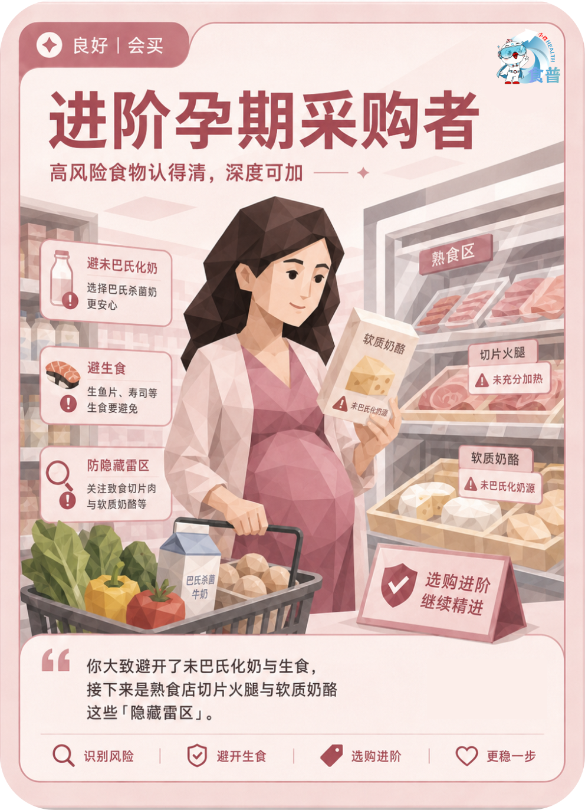

孕育人群
良好
会买
P06
进阶孕期采购者
高风险食物认得清,深度可加
你大致避开了未巴氏化奶与生食,接下来是熟食店切片火腿与软质奶酪这些「隐藏雷区」。
手机端可点击“打开原图”后长按图片保存；也可以直接长按上方图卡保存。

高风险食物认得清,深度可加
你大致避开了未巴氏化奶与生食,接下来是熟食店切片火腿与软质奶酪这些「隐藏雷区」。
手机端可点击“打开原图”后长按图片保存；也可以直接长按上方图卡保存。